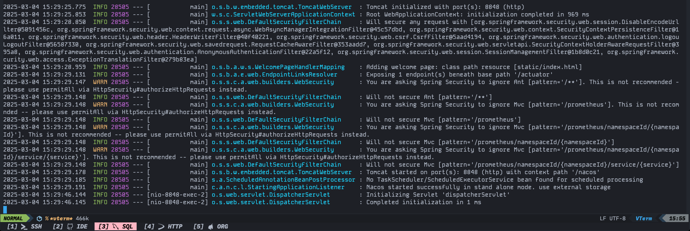
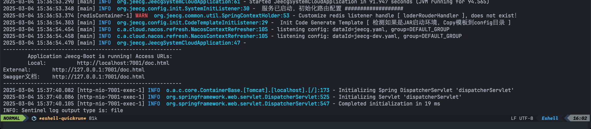
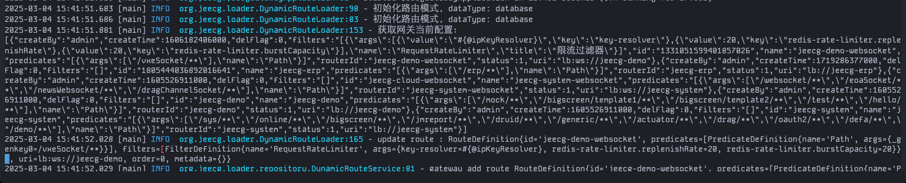
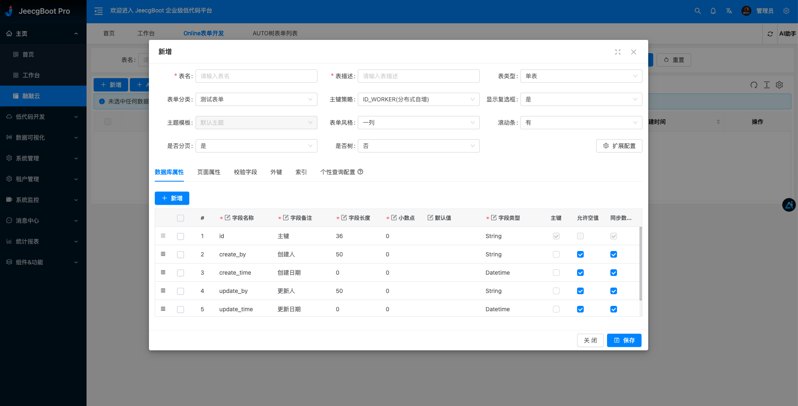

JeecgBoot 低代码平台
国货之光产品、低代码平台 + 代码生成可二次迭代逻辑。
简介
JeecgBoot 是一个 基于 Spring Boot、Spring Cloud 和 Vue 的低代码开发平台，能够 快速生成 CRUD、可视化表单，并支持 代码生成、工作流集成、多租户、微服务架构 等功能。
它适用于 企业级应用开发，帮助开发者 减少 70% 以上的重复开发工作，提高效率。
微服务启动
微服务启动重点关注 JeecgBoot/jeecg-boot/jeecg-server-cloud 目录. 需要启动的服务有以下三个：
官方开发文档： http://help.jeecg.com/
jeecg-cloud-nacos
nacos 需要特定版本，非特定版本的 nacos 与 jeecg 有兼容性问题导致读取不了配置。
- 创建 nacos 数据存储库（mysql 库），并刷入 jeecg 需要的配置数据 tables_nacos.sql。
- 在 nacos 配置中，配置数据库的链接信息 application-mysql.yml。
- 最后使用
java -jar或者mvn spring:bootrun 将 nacos 启动。

jeecg-system-cloud-start
jeecg 的核心服务包括低代码、用户、菜单、角色、组织、权限管理等基础功能。
-
JeecgBoot/pom.xml 配置 nacos 连接信息，nacos 连接通过 maven 来配置，其他配置使用配置中心来配置。
<profile> <id>dev</id> <activation> <!--默认激活配置--> <activeByDefault>true</activeByDefault> </activation> <properties> <!--当前环境--> <profile.name>dev</profile.name> <!--Nacos服务地址--> <config.server-addr>127.0.0.1:8848</config.server-addr> <!--Nacos配置中心命名空间,用于支持多环境.这里必须使用ID，不能使用名称,默认为空--> <config.namespace></config.namespace> <!--Nacos配置分组名称--> <config.group>DEFAULT_GROUP</config.group> <!--Nacos用户名--> <config.username>nacos</config.username> <!--Nacos密码--> <config.password>nacos</config.password> </properties> </profile> -
创建 jeecg 数据库并刷入数据，
source JeecgBoot/jeecg-boot/db/jeecgboot-mysql-5.7.sql -
在配置中心修改 jeecg-dev.yaml 数据库连接及 redis 连接信息。
-
启动，
java -Dfile.encoding=utf-8 -Dspring.profiles.active=dev -jar ./target/jeecg-system-cloud-start-3.7.3.jar

jeecg-cloud-gateway
jeecg 的转发网关，保证集群的关键应用。网关只连 redis 中间件配置也相对少一些。
- 在配置中心修改 jeecg-gateway-dev.yaml redis 连接信息。
- 启动，
java -Dfile.encoding=utf-8 -Dspring.profiles.active=dev -jar ./target/./target/jeecg-system-cloud-start-3.7.3.jar

jeecg-vue3
jeecg 采用前后端分离，需要单独部署前端。
-
JeecgBoot/jeecgboot-vue3/.env.development 修改后端配置。
# 跨域代理，您可以配置多个 ,请注意，没有换行符 VITE_PROXY = [["/jeecgboot","http://localhost:9999"],["/upload","http://localhost:3300/upload"]] #后台接口全路径地址(必填) VITE_GLOB_DOMAIN_URL=http://localhost:9999 -
启动，
npm run dev。
